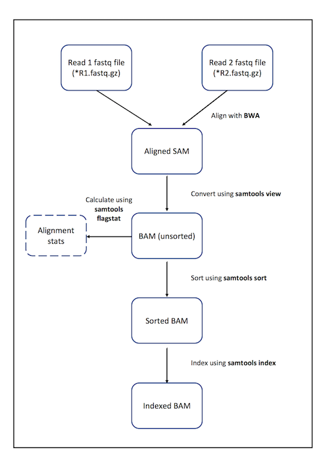

Read Alignment
Key Learning Outcomes
After completing this practical the trainee should be able to:
-
Perform the simple NGS data alignment task against reference data.
-
Learn about the SAM/BAM formats for further manipulation.
-
Be able to sort and index BAM format for visualisation purposes.
Resources You’ll be Using
Tools Used
BWA Burrows-Wheeler Algorithm:
http://bio-bwa.sourceforge.net
Samtools:
http://picard.sourceforge.net/
Useful Links
SAM Specification:
http://samtools.sourceforge.net/SAM1.pdf
Explain SAM Flags:
https://broadinstitute.github.io/picard/explain-flags.html
Sources of Data
http://sra.dnanexus.com/studies/ERP001071
Author Information
Primary Author(s):
Sonika Tyagi sonika.tyagi@agrf.org.au
Gayle Philip gkphilip@unimelb.edu.au
Contributor(s):
Introduction
The goal of this hands-on session is to perform an NGS alignment on the sequencing data coming from a tumour and normal group of samples. We will align raw sequencing data to the human genome using the BWA aligner and then we will discuss the sequence alignment and mapping format (SAM). SAM to BAM conversion, indexing and sorting will also be demonstrated. These are important and essential steps for downstream processing of the aligned BAM files.
This data is the whole genome sequencing of a lung adenocarcinoma
patient AK55. It was downloaded from
ERP001071. Only the HiSeq2000 data for Blood and liverMets were analysed.
Accession numbers associated with read data are assigned by the European Bioinformatics Institute (EBI) and start with ’ER’. e.g. ERP is the study ID and ERR is the run ID. The original FASTQ files downloaded had the ERR number in front of each read name in the FASTQ file (e.g. @ERRxx HWI-ST478_xxxx). The read name had to be edited to remove the ERR number at the start of the name. This had caused problems for downstream programs such as Picard for marking optical duplicates.
We have used 4 Blood samples (8 paired-end (PE) *.fastq.gz files) and 5 Liver
samples (10 PE *.fastq.gz files) data from this study to perform the
whole genome alignment using the BWA aligner. The whole process took
>150K CPU seconds per sample and the precomputed alignment will be used
in different sections of this workshop.
Prepare the Environment
By now you know about the raw sequence FASTQ format generated by the
Illumina sequencers. Next we will see how FASTQ files are aligned to
the reference genome and what the resulting standard alignment
format is. In the interest of time, we have selected only 1 million paired
reads from a Blood sample to demonstrate a BWA command. The remaining
alignments have already been performed for you and will be required in
the subsequent modules of the workshop.
The input data for this section can be found in the alignment
directory on your desktop. Please follow the commands below to go to the
right folder and view the top 10 lines of the input FASTQ file:
Open the Terminal.
First, go to the right folder, where the data are stored.
cd /home/trainee/alignment ls zless input/SM_Blood_ID_ERR059356.subset_R1.fastq.gz
Press q to stop the zless command.
Overview of the Process

Figure 1: A flow diagram showing the steps that will be performed in this practical.
Alignment
You already know that there are a number of competing tools for short
read alignment, each with its own set of strengths, weaknesses, and
caveats. Here we will use BWA, a widely used aligner based on the
Burrows-Wheeler Algorithm. The alignment involves two steps:
1) Indexing the genome.
2) Running the alignment command.
BWA is a software package for mapping low-divergent sequences against a large reference genome, such as the human genome. It consists of three algorithms: BWA-backtrack, BWA-SW and BWA-MEM. The first algorithm is designed for Illumina sequence reads up to 100bp, while the other two are for longer sequences ranging from 70bp to 1Mbp. BWA-MEM and BWA-SW share similar features such as long-read support and split alignment, but BWA-MEM, which is the latest, is generally recommended for high-quality queries as it is faster and more accurate. BWA-MEM also has better performance than BWA-backtrack for 70-100bp Illumina reads. For more details see the BWA manual.
BWA has a number of parameters in order to perform the alignment. To view them all, type
bwa <press enter>
BWA uses an indexed genome for the alignment in order to keep its memory
footprint small. Indexing a genome is similar in concept to indexing a book.
If you want to know on which page a certain word appears or a chapter begins,
it is much more efficient/faster to look it up in a pre-built index than going
through every page of the book until you find it. Indices allow the aligner to narrow
down the potential origin of a query sequence within the genome, saving both time and memory.
Due to time constraints, we will NOT be running the indexing command. It is run only once for a version of a genome, and the complete command to index the human genome version hg19 is given below.
STOP
You DO NOT need to run this command. This has already been run for you.
bwa index -p bwaIndex/human_g1k_v37.fasta -a bwtsw human_g1k_v37.fasta
We have used the following arguments for the indexing of the genome.
-p: Prefix of the output database [same as db filename].
-a: Algorithm for constructing BWT index. This method works with the whole human genome.
Ref genome filename: the last argument is the name of the reference genome file in the fasta format.
This command will output 6 files that constitute the index. These files
have the prefix human_g1k_v37.fasta and are stored in the bwaIndex
subdirectory. To view the precomputed index files, type:
ls -l bwaIndex
Now that the genome is indexed we can move on to the actual alignment.
Make a directory to store the output from your aligner.
mkdir outputs
The first argument for bwa is the basename of the index for the genome
to be searched. In our case this is human_g1k_v37.fasta.
Align the reads from the Blood sample using the following command:
bwa mem -M -t 4 -R '@RG\tSM:Blood\tID:ERR059356.subset\tLB:lb\tPL:ILLUMINA' bwaIndex/human_g1k_v37.fasta input/SM_Blood_ID_ERR059356.subset_R1.fastq.gz input/SM_Blood_ID_ERR059356.subset_R2.fastq.gz > outputs/SM_Blood_ID_ERR059356.subset.sam
The above command outputs the alignment in SAM format and stores them in
the file SM_Blood_ID_ERR059356.subset.sam in the subdirectory outputs.
We have used the following arguments for the alignment of the reads.
mem: fast mode of high quality input such the Illumina
-M: flags extra hits as secondary. This is needed for compatibility with other tools downstream.
-t: Number of threads.
-R: Complete read group header line.
The SAM (Sequence Alignment/Map)
format is currently the de facto standard for storing large nucleotide
sequence alignments. It is a TAB-delimited text format consisting of a header section, which is
optional, and an alignment section. If present, the header must be prior
to the alignments. Header lines start with @, while alignment lines do
not. Each alignment line has 11 mandatory fields with essential alignment
information such as mapping position.
Navigate into your outputs directory and look at the top 10 lines of the SAM file by typing:
cd outputs head -n 10 SM_Blood_ID_ERR059356.subset.sam
Question
Can you distinguish between the header of the SAM format and the actual alignments?
Answer
The header line starts with the letter ‘@’ i.e.
@SQ SN:GL000192.1 LN:547496 @RG SM:Blood ID:ERR059356 LB:lb PL:ILLUMINA @PG ID:bwa PN:bwa VN:0.7.15-r1140 CL:bwa mem -M -t 4 -R @RG\tSM:Blood\tID:ERR059356.subset\tLB:lb\tPL:ILLUMINA bwaIndex/human_g1k_v37.fasta input/SM_Blood_ID_ERR059356.subset_R1.fastq.gz input/SM_Blood_ID_ERR059356.subset_R2.fastq.gz
The actual alignments start with read ID i.e.
HWI-ST478_0133:3:1101:1374:2056#0 147 11 HWI-ST478_0133:3:1101:1352:2070#0 163 14
Question
What kind of information does the header provide?
Answer
-
@HD: Header line; VN: Format version; SO: the sort order of alignments.
-
@SQ: Reference sequence information; SN: reference sequence name; LN: reference sequence length.
-
@PG: Program; ID: Program record identifier; VN: Program version; CL: the command line that produces the alignment.
Question
To which chromosome are the reads mapped?
Answer
All chromosomes are represented (look at the 3rd field).
grep -v “^@” SM_Blood_ID_ERR059356.subset.sam | cut -f3 | sort | uniq
Manipulating SAM output
SAM files are rather big and when dealing with a high volume of NGS data, storage space can become an issue. As we have already seen, we can convert SAM to BAM files (their binary equivalent that are not human readable) that occupy much less space.
Convert SAM to BAM using samtools view and store the output in the
file SM_Blood_ID_ERR059356.subset.bam. You have to instruct samtools view that the input
is in SAM format (-S), the output should be in BAM format (-b) and
that you want the output to be stored in the file specified by the -o
option:
samtools view -bSo SM_Blood_ID_ERR059356.subset.bam SM_Blood_ID_ERR059356.subset.sam
BAM files are not human-readable but can be viewed with the samtools view command.
Advanced exercise
Compute summary stats for the Flag values associated with the alignments using:
samtools flagstat SM_Blood_ID_ERR059356.subset.bam
Post Alignment Visualisation option
IGV is a stand-alone genome browser that can be used to visualise the BAM outputs. Please check their website for all the formats that IGV can display.
We will be using IGV later in the workshop for viewing a BAM file in the
genome browser. It requires the index of the BAM file to be in the same
folder as where the BAM file is. The index file should have the same
name as the BAM file and the suffix .bai. Finally, to create the index
of a BAM file you need to make sure that the file is sorted according to
chromosomal coordinates.
Sort alignments according to chromosomal position and store the result
in the file with the prefix SM_Blood_ID_ERR059356.subset.sorted:
samtools sort SM_Blood_ID_ERR059356.subset.bam SM_Blood_ID_ERR059356.subset.sorted
Index the sorted file.
samtools index SM_Blood_ID_ERR059356.subset.sorted.bam
The indexing will create a file called SM_Blood_ID_ERR059356.subset.sorted.bam.bai. Note that
you don’t have to specify the name of the index file when running
samtools index, it simply appends a .bai suffix to the input BAM
file.
Question
How can you quickly find out whether a BAM file is already coordinate sorted or not?
Answer
Use samtools view -h command to look at the SAM header.
It will have an SO field (e.g. SO:coordinate)